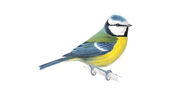

Blue Tit
Clutches as large as 19 eggs, all laid by the same female, have been recorded.
- Latin name: Cyanistes caeruleus
- Family: Tits
- What they eat: Insects, caterpillars, seeds and nuts.
- Population: 20-44 million pairs
A colourful mix of blue, yellow, white and green makes the blue tit one of our most attractive and most recognisable garden visitors. In winter, family flocks join up with other tits as they search for food. A garden with four or five blue tits at a feeder at any one time may be feeding 20 or more.